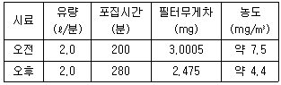
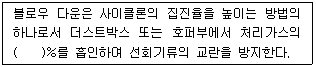
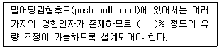

산업위생관리산업기사 (2004-08-08 기출문제)
1과목: 산업위생학 개론
1. 1775년 영국에서 굴뚝청소부로 사역하였던 10세미만의 어린이에게서 음낭암을 발견한 사람은?
- T.M Legge
- Gulen
- Coriga
- Percival pott
(정답률: 100%)

2. 산업피로에 관한 내용중 알맞지 않은 것은?
- 과로는 피로의 축적으로 단기간 휴식으로 회복될 수 없는 발병단계의 피로이다.
- 정신피로와 신체피로는 보통 함께 나타나므로 구별하기 어렵다.
- 국소피로와 전신피로는 신체피로 부위의 크기에 따라 상대적으로 구분된다.
- 피로는 고단하다는 주관적인 느낌이라 할 수 있다.
(정답률: 47%)
3. 안간공학을 '인간과 기계의 관계를 합리화시키는 것' 이라고 정의를 내린 과학자는?
- Ramazzini, B
- Barnes, B
- Tayler, R.E
- Woodson, W.E
(정답률: 알수없음)
4. 작업강도에 관한 설명으로 알맞지 않는 것은?
- 작업강도는 일반적으로 열량소비량을 기준으로 한다.
- 작업할 때 소비되는 열량을 나타내기 위하여 성별, 연령별 및 체격의 크기를 고려한 작업대사율이라 하는 지수를 사용한다.
- 작업대사량은 작업강도를 전체적으로 잘 나타낸다고 할 수 있다.
- 작업대사율은 [작업대사량/기초대사량]으로 표현될 수 있다.
(정답률: 60%)
5. 신체적 결함과 문제되는 작업을 틀리게 짝지은 것은?
- 비만증 - 고열작업
- 고혈압 - 정신적 긴장작업
- 당뇨증 - 유기용제를 다루는 화공작업
- 심계항진 - 중근작업
(정답률: 45%)
6. 수족신경마비, 시신경장해, 정신이상, 보행장해 등을 가져오는 '미나마타병'이란 어떤 금속에 중독되었을 때 나타나는 질병인가?
- Hg
- Pb
- Cr
- Cd
(정답률: 58%)
7. 경영자에 대한 산업보건교육 내용으로 가장 적절한 것은?
- 어떻게 하여야 하는가
- 언제하여야 하는가
- 왜 하여야 하는가
- 무엇을 하여야 하는가
(정답률: 82%)
8. PWC(육체적 작업능력)이 16kcal/min인 근로자가 물체운반 작업을 하고 있다. 작업대사량은 7kcal/min, 휴식시의 대사량이 2.0kcal/min이라면 적절한 휴식시간은? (단, Hertig의 식을 이용, 1일 8시간 작업기준)
- 매시간 약 5분 휴식하고 55분 작업
- 매시간 약 10분 휴식하고 50분 작업
- 매시간 약 15분 휴식하고 45분 작업
- 매시간 약 20분 휴식하고 40분 작업
(정답률: 67%)
9. 어떤 근로자에 약한 손(오른손잡이인 경우 왼손)의 힘이 약 50kp(kilopond) 정도이다. 이 근로자가 무게 20kg인 상자를 두 팔로 들어올릴 경우 작업강도(%MS)는?
- 10%
- 20%
- 30%
- 40%
(정답률: 84%)
10. 만성중독시의 특징으로 코점막의 염증, 비중격천공 등의 증상이 나타나는 대표적인 물질은?
- 납
- 크롬
- 망간
- 니켈
(정답률: 84%)
11. 독일의 의사이자 광물학자인 그는 저서 『광물에 대하여』에서 광업에 관련된 유해성을 언급하였으며, 이 저서는 1912년 Hoover(후에 미국 대통령이 됨)부부에 의해 번역 되기도 한 그는 누구인가?
- Georgius Agricola
- Philippus Paracelsus
- Pliny the Elder
- Bernardino Ramazzini
(정답률: 40%)
12. NIOSH에서는 MPL(Maximum permissible limit)을 초과하는 경우 대책으로서 권고하고 있는 내용으로 적절한 것은?
- 반드시 공학적 방법을 적용하여 중량물 취급작업을 다시 설계한다.
- 적절한 근로자의 선택과 적정배치 및 훈련, 그리고 작업방법의 개선이 필요하다.
- 대부분의 정상근로자들에게 적절한 작업조건이다.
- 문제있는 근로자를 적절한 근로자로 교대시킨다.
(정답률: 93%)
13. 다음 중 산업위생전문가의 책임에 대한 내용과 가장 거리가 먼 것은?
- 전문분야로서의 산업위생을 학문적으로 발전시킨다.
- 위험요소와 예방조치에 대해 근로자와 상담한다.
- 일반대중에 관한 사항은 정직하게 발표한다.
- 궁극적 책임은 고객의 건강보호에 있다.
(정답률: 알수없음)
14. 노출농도가 100ppm인 톨루엔을 취급하는 작업에서 1일 10시간 작업을 할 때 8시간 기준의 보정된 노출농도는? (단, Brief-Scala의 보정방법 적용)
- 80 ppm
- 70 ppm
- 115 ppm
- 125 ppm
(정답률: 알수없음)
15. 작업의 강도는 작업대사율(relative metabolic rate, RMR)에 따라 5단계로 구분할 수 있다. 중(重)작업의 작업대사율은?
- 0∼1
- 1∼2
- 2∼4
- 4∼7
(정답률: 63%)
16. 작업대사율이 2인 경우 일반적인 실동율(%)은?
- 65
- 75
- 85
- 95
(정답률: 90%)
17. 100명의 근로자가 작업하는 공장에서 1년 동안 6건의 재해가 발생하였다면 도수율은? (단, 1일 8시간 근무, 연간 평균 300일 근로 기준)
- 12
- 18
- 21
- 25
(정답률: 80%)
18. 우리나라에서 산업위생과 관련된 최초의 법령은 근로기준법이라 할 수 있다. 근로기준법이 공포된 시기는?
- 1948년
- 1953년
- 1958년
- 1963년
(정답률: 39%)
19. 교대근무제를 실시하려고 할 때 교대제 관리원칙으로 알맞지 않는 것은?
- 근무시간은 8시간 교대로 할 것
- 야근의 경우는 4-5일 이상 연속한 후 교대할 것
- 2교대면 최저 3조의 정원, 3교대면 4조를 편성할 것
- 야근후 다음반으로 가는 간격은 48시간 이상으로 할 것
(정답률: 100%)
20. 다음 중 전신피로의 원인이 아닌 것은?
- 산소 공급 부족
- 혈중 젖산 농도 증가
- 혈중 포도당 농도 저하
- 근육내 글리코겐량의 증가
(정답률: 62%)
2과목: 작업환경측정 및 평가
21. 일정한 물질에 대해 반복 측정ㆍ분석을 했을 때 자료분석치의 변동크기가 얼마나 작은가를 나타내는 용어는?
- 정확도
- 참값
- 정밀도
- 대표값
(정답률: 67%)
22. 다음은 습구흑구온도지수(WBGT)를 사용하여 옥내작업장의 고온의 허용기준을 산출하는 공식으로 알맞는 것은? (단, 태양광선이 내리쬐지 않는 장소)
- (0.7 × 자연습구온도)+(0.2 × 흑구온도)+(0.1 × 건구온도)
- (0.7 × 자연습구온도)+(0.2 × 건구온도)+(0.1 × 흑구온도)
- (0.7 × 자연습구온도)+(0.3 × 흑구온도)
- (0.7 × 자연습구온도)+(0.3 × 건구온도)
(정답률: 64%)
23. 가장 많이 사용되는 표준형의 활성탄관의 경우 앞층과 뒷층에 들어 있는 활성탄의 양은? (단, 앞층: 공기입구쪽 )
- 앞층: 50 mg, 뒷층: 100 mg
- 앞층: 100 mg, 뒷층: 50 mg
- 앞층: 200 mg, 뒷층: 400 mg
- 앞층: 400 mg, 뒷층: 200 mg
(정답률: 74%)
24. 실리카겔이 활성탄에 비해 갖는 장·단점으로 틀린 것은?
- 수분을 잘 흡수하는 단점을 가지고 있다.
- 활성탄으로 채취가 어려운 아닐린, 오르쏘-톨루이딘 등의 아민류나 몇몇 무기물질의 채취가 가능하다.
- 추출액이 화학분석이나 기기분석에 방해물질로 작용하는 경우가 많지 않다.
- 이황화탄소를 주탈착용매로 하여 쉽게 탈착시킨다.
(정답률: 74%)
25. 목재공장의 작업환경 중 분진농도를 측정하였더니 5, 7, 5, 7, 6 ppm이었다. 기하평균은?
- 5.3 ppm
- 5.5 ppm
- 5.7 ppm
- 5.9 ppm
(정답률: 70%)
26. 금속흄 시료를 7시간 동안 채취하였다. 여과지의 초기 무게는 15.0 mg이었고 최종 무게는 20.0 mg이었다. 시료는 2.0 L/분으로 채취하였다. 공기중 금속흄 농도(mg/m3)는?
- 2.95
- 3.95
- 4.95
- 5.95
(정답률: 77%)
27. 공기중 벤젠(분자량=78.1)의 농도 100mg/m3를 ppm 농도로 환산하면 얼마인가? (단, 1기압 25℃ 기준)
- 63.1
- 51.3
- 48.3
- 31.3
(정답률: 알수없음)
28. 공기중의 용접흄의 농도를 측정하기 위해 오전과 오후로 나누어 전체 2개의 시료를 연속적으로 포집하였고 측정농도 및 조건은 다음표와 같다. 이때의 시간가중 평균농도(TLV-TWA)는 얼마인가?

- 약 5.7㎎/m3
- 약 6.3㎎/m3
- 약 7.5㎎/m3
- 약 8.3㎎/m3
(정답률: 17%)
29. 납흄에 노출되고 있는 근로자의 납노출농도를 측정한 결과 0.⑤6mg/m3이었다. 노동부의 통계적인 평가방법에 따라 이 근로자의 노출을 평가하면? (단, 시료채취 및 분석오차(SAE) = 0.132 이고 납에 대한 노동부 노출기준은 0.⑤mg/m3 이다. 95% 신뢰도이며 작업시간 전체를 1개의 시료로 측정)
- 초과하지 않음
- 초과함
- 초과가능
- 판정할 수 없음
(정답률: 17%)
30. 다음 중 2차 표준기구와 가장 거리가 먼 것은?
- Rotameter
- Spirometer
- Orifice meter
- Wet-test meter
(정답률: 56%)
31. 흡광광도 측정에서 투과율 50%일 때 흡광도는?
- 0.1
- 0.2
- 0.3
- 0.4
(정답률: 알수없음)
32. 유해물질 농도를 측정한 결과 벤젠 4ppm(노출기준 10ppm) 톨루엔 64ppm(노출기준 100ppm), n-헥산 12ppm(노출기준 50ppm)이었다면 이들 물질의 복합 노출지수(Exposure Index)는? (단, 상가작용 기준)
- 0.98
- 1.14
- 1.24
- 1.28
(정답률: 64%)
33. 석면농도 측정에 있어서는 충전식 휴대용 펌프를 이용하여 셀룰로스 막여과지로 공기를 통과시켜 시료를 채취한 후 아세톤 증기를 씌우고 트리아세틴 시약을 떨어뜨린 다음 위상차 현미경으로 계수하여 측정한다. 어느 정도 길이 이상의 석면만을 측정 하는가? (단, NIOSH 방법 7400 기준, 길이 : 너비 = 3 : 1이상임 )
- 1㎛
- 2㎛
- 3㎛
- 5㎛
(정답률: 29%)
34. MCE 막여과지에 관한 설명으로 틀린 것은?
- MCE 막여과지는 원료인 셀룰로스가 수분을 흡수하지 않으므로 정확성을 요구하는 중량분석에 사용된다.
- MCE 막여과지는 산에 쉽게 용해되므로 입자상물질 중의 금속을 채취하여 원자흡광법으로 분석하는데 적정하다.
- 산업위생에서는 거의 대부분이 직경 37mm, 구멍의 크기 0.8㎛의 MCE 막여과지를 사용하고 있다.
- 시료가 여과지의 표면 또는 표면 가까운 곳에 침착되므로 석면, 유리섬유 등 현미경분석을 위한 시료 채취에도 이용된다.
(정답률: 64%)
35. 세 개의 소음수준을 각각 측정해보니 86dB, 88dB, 90dB이었다. 세 개의 소음원이 동시에 가동될 때 총음압수준(dB)은?
- 91
- 93
- 95
- 97
(정답률: 73%)
36. 벤젠 100㎖에 디티존 0.1g을 넣어 녹인 후 이 원액을 10배 희석시키면 디티존은 몇 ㎍/㎖용액이 되겠는가?
- 1㎍/㎖
- 10㎍/㎖
- 100㎍/㎖
- 1000㎍/㎖
(정답률: 73%)
37. 다음 중 기류를 측정하는 기기가 아닌 것은?
- 카타온도계
- 아스만통풍건습계
- 열선풍속계
- 풍차풍속계
(정답률: 59%)
38. 여러 가지 금속을 동시에 분석할 수 있는 분석기기로 가장 적절한 것은?
- 원자흡광분석기
- 가스크로마토그래피
- ICP
- HPLC
(정답률: 알수없음)
39. 톨루엔(Toluene, MW=92.14) 농도가 50ppm인 사업장에서 채취유량은 0.15 ℓ/min으로 가스크로마토그래프의 정량한계가 0.2㎎이다. 채취할 최소시간은? (단, 1기압 25℃ 기준)
- 1분
- 3분
- 5분
- 7분
(정답률: 43%)
40. 누적소음노출량측정기(Noise-Dosimeter)를 사용하여 소음을 측정코자 할 때 우리나라 법정 기준에 맞는 Criterian Level 및 exchange rate는? (단, A특성 보정, 측정대상여부를 판단하기 위한 경우)
- 90㏈, 3㏈
- 85㏈, 3㏈
- 90㏈, 5㏈
- 85㏈, 5㏈
(정답률: 알수없음)
3과목: 작업환경관리
41. 산소가 결핍된 환경 또는 유해물의 농도가 높거나 독성이 강한 작업장에서 사용해야할 마스크(보호구)로 적합한 것은?
- 방진마스크
- 방독마스크
- 공기공급식마스크
- 일반면마스크
(정답률: 알수없음)
42. 용융용접중 아르곤이나 헬륨등의 불활성 가스를 사용하며 스테인레스강, 알루미늄 합금, 동이나 티탄합금 등의 용접에 주로 사용하고 흄의 발생이 많은 것은?
- MAGC
- MAG
- MMA
- MIG
(정답률: 34%)
43. 고온다습한 환경에 노출될때 체온조절중추 특히 발한중추의 장해로 발생하며 가장 특이적인 소견은 땀을 흘리지 못하여 체열 방산을 하지 못하는 건강장애는?
- 열사병
- 열피비
- 열경련
- 열실신
(정답률: 알수없음)
44. 다음 중 방독마스크의 정화통(카트리지 cartridge고도 함)의 수명에 가장 적은 영향을 주는 인자는?
- 작업장의 습도
- 작업장의 기류
- 착용자의 호흡률
- 작업장 오염물질의 농도
(정답률: 40%)
45. 다음 중 태양복사광선의 파장범위에 따른 구분이 올바른 것은?
- 300nm - 적외선
- 600nm - 자외선
- 700nm - 가시광선
- 900nm - 건강선(Dorno선)
(정답률: 50%)
46. 공기공급식 호흡기보호구 중 자가공기공급장치에 관한 설명으로 알맞지 않는 것은?
- 개방식 : 호기에서 나온 공기는 장치 밖으로 배출되며 사용시간은 30분에서 60분 정도이다
- 개방식 : 소방수가 주로 사용하며 압축산소를 사용한다
- 폐쇄식 : 산소발생장치에는 주로 KO2를 사용한다
- 폐쇄식 : 개방식보다 가벼운 것이 장점이며 사용시간은 30분에서 4시간 정도이다
(정답률: 알수없음)
47. 폐결핵과 가장 밀접한 관계가 있는 진폐증으로 가장 많이 발견되는 질병은?
- 규폐증
- 면폐증
- 농부폐증
- 석면폐증
(정답률: 39%)
48. 수은의 중독에 따른 대책으로 가장 거리가 먼 것은?
- 마늘계통의 식물을 섭취한다
- BAL를 투여한다
- EDTA를 투여한다
- 우유와 계란의 흰자를 먹인다
(정답률: 50%)
49. 방독마스크의 흡착제를 검정할 때 사용하는 물질로 가장 알맞는 것은?
- 사염화탄소
- 부탄올
- 메탄올
- 일산화탄소
(정답률: 63%)
50. 수은 작업장의 작업환경관리대책으로 적합하지 못한 것은?
- 수은 주입과정을 자동화 시킨다.
- 수거한 수은은 물통에 보관한다.
- 바닥은 다공질의 재료를 사용하여 수은이 외부로 노출되는 것을 막는다.
- 실내온도를 가능한 한 낮게 유지시키고 일정하게 유지 시킨다.
(정답률: 74%)
51. 소음성 난청의 초기 단계인 C5 - dip 현상으로 청력장해가 현저히 커지는 주파수(㎐)는?
- 1000
- 2000
- 4000
- 8000
(정답률: 73%)
52. 전자기파중 '전기장'에 관한 설명으로 틀린 것은?
- 전기기구의 전선이 플러그에 꽂아있어 비록 스위치를 켜지 않았어도 전압만 존재하면 생기게 된다
- 측정단위는 V/m 혹은 KV/m 를 사용한다
- 대부분의 물체를 통과하기 때문에 차폐하기가 어렵다
- 전계장(electric field)이라고도 한다
(정답률: 48%)
53. 어떤 작업장의 음압수준이 90dB(A)이고 근로자의 NRR이 27인 귀마개를 착용하고 있다면 차음효과는? (단, 미국 OSHA 기준 )
- 5dB
- 10dB
- 15dB
- 20dB
(정답률: 58%)
54. 사업장의 유해물질을 물리적, 화학적성질과 사용목적을 조사하여 유해성이 보다 작은 물질로 대치한 경우로 보기 어려운 것은?
- 아조염료의 합성 원료인 벤지딘을 디클로로벤지딘으로 전환한 경우
- 단열재로서 사용하는 석면을 유리섬유로 전환한 경우
- 금속제품의 탈지에 사용되는 트리클로로에틸렌을 계면활성제로 전환한 경우
- 분체의 원료를 입자가 큰 것에서 작은 것으로 전환한 경우
(정답률: 50%)
55. 바람직한 VDT 작업자세라고 할 수 없는 것은?
- 문서홀더와 화면은 높이가 동일 할 것
- 팔의 각도는 90° 이하일 것
- 상박과 몸 중심선이 일치할 것
- 화면과 눈의 거리는 두 뼘(40cm)이상 유지할 것
(정답률: 알수없음)
56. 청력보호구의 차음효과를 높이기 위한 유의사항으로 틀린 것은?
- 사용자의 머리와 귓구멍에 잘 맞아야 할 것
- 흡음율을 높이기 위해 기공(氣孔)이 많은 재료를 선택할 것
- 청력보호구를 잘 고정시켜서 보호구 자체의 진동을 최소화 할 것
- 귀덮개 형식의 보호구는 머리카락이 길 때, 사용하지 말도록 할 것
(정답률: 80%)
57. 감압병의 예방 및 치료에 관한 방법중 적절하지 못한 사항은?
- 고압환경에서의 작업시간을 제한한다.
- 감압이 끝날 무렵에 순수한 산소를 흡입시킨다.
- 고압환경에서 작업할때 질소를 수소로 대치한 공기를 호흡시킨다.
- 일반적으로 1분에 10m 정도씩 잠수하는 것이 안전하다.
(정답률: 91%)
58. 대상먼지와 침강속도가 같고, 밀도가 1이며 구형인 먼지의 직경으로 환산된 직경을 무엇이라 하는가?
- 공기 기하학적 직경(aero-geometric diameter)
- 공기역학적 직경(aerodynamic diameter)
- 등면적 직경(projected area diameter)
- 마틴 직경(Martin's diameter)
(정답률: 알수없음)
59. 투과력은 가장 약하나 전리작용이 가장 강한 전리방사선의 종류는?
- X선
- γ 선
- α 입자
- β 입자
(정답률: 37%)
60. 채광을 위한 창의 면적은 바닥면적의 몇 %가 이상적인가?
- 10 ∼ 15%
- 15 ∼ 20%
- 20 ∼ 25%
- 25 ∼ 30%
(정답률: 77%)
4과목: 산업환기
61. ( )안에 알맞는 내용은?

- 5 ∼ 10
- 10 ∼ 15
- 15 ∼ 20
- 20 ∼ 25
(정답률: 50%)
62. 덕프의 조도를 나타내는 상대조도를 가장 알맞게 기술한 것은?
- 절대 표면조도를 유체밀도로 나눈 값이다
- 절대 표면조도를 마찰손실로 나눈 값이다
- 절대 표면조도를 공기유속으로 나눈 값이다
- 절대 표면조도를 덕트직경으로 나눈 값이다
(정답률: 24%)
63. 국소배기장치에서 후드의 유입계수가 0.82, 속도압이 30㎜H2O라면 후드의 압력손실은?
- 11.6㎜H2O
- 14.6㎜H2O
- 16.6㎜H2O
- 18.6㎜H2O
(정답률: 67%)
64. 다음은 관내기류의 단위체적당 유체에 작용하는 힘, 즉 압력을 설명한 것이다. 틀리게 설명된 것은?
- 전압은 흐름의 방향으로 작용한다.
- 동압은 단위체적의 유체가 갖고 있는 운동에너지이다.
- 동압은 때로는 저항압력 또는 마찰압력이라고도한다.
- 정압은 단위체적의 유체가 압력이라는 형태로 나타내는 에너지이다.
(정답률: 59%)
65. 속도압이 10mmH2O인 닥트의 유속 V(m/sec)는? (단, 공기밀도 1.2kg/m3)
- 12.8 m/sec
- 14.8 m/sec
- 25.4 m/sec
- 30.1 m/sec
(정답률: 알수없음)
66. 20℃, 1기압에서의 유체의 점성계수는 1.8×10-5kg/sec·m이고, 공기밀도는 1.2 kg/m3, 유속은 5m/sec그리고 덕트직경은 0.5m이다. 이 때 레이놀드수는?
- 1.57× 105
- 1.67× 105
- 1.78× 105
- 1.86× 105
(정답률: 알수없음)
67. 유기용제를 취급하는 국소환기 시설에서 송풍관의 재질로 가장 적당한 것은?
- 스텐레스 강판
- 흑피 강판
- 아연도금 강판
- 중질 콘크리트
(정답률: 46%)
68. 200℃, 700mmHg, 상태에서 100m3의 공기를 산업환기의 표준상태(21℃, 1기압)로 계산하면 얼마의 부피를 차지하겠는가?
- 약 47m3
- 약 57m3
- 약 67m3
- 약 77m3
(정답률: 알수없음)
69. ( )에 가장 적절한 수치는?

- ± 10
- ± 20
- ± 30
- ± 40
(정답률: 알수없음)
70. 1㎛ 이상의 분진의 포집은 99%가 관성충돌과 직접차단에 의하여 이루어지고, 0.1㎛ 이하의 분진은 확산과 정전기력에 의하여 포집되는 집진장치로 가장 적절한 것은?
- 관성력 집진장치
- 원심력 집진장치
- 세정 집진장치
- 여과 집진장치
(정답률: 28%)
71. 원심형 송풍기 중 터보형에 대한 설명 중 바르지 않은 것은?
- 후향곡형(backward type) 송풍기로서 팬의 날이 회전방향에 반대되는 쪽으로 기울어진 형태이다.
- 송풍량이 증가해도 동력이 증가하지 않는 장점이 있다.
- 효율이 다른 원심력 송풍기에 비해 비교적 좋다.
- 분진이 다량 함유된 공기를 이송할 때 효율이 높다.
(정답률: 64%)
72. 압력측정장비 중 경사수직마노미터에 관한 설명으로 가장 거리가 먼 것은?
- 압력이 높은 부분의 정밀한 측정치를 읽을 수 있도록 경사지게 되어 있다
- ± 1% 까지의 정확도를 달성할 수 있다
- 측정범위나 원주의 숫자 및 보정장치 등이 매우 다양하다
- 실험실이나 작업현장에서 미세한 압력변화를 신뢰성 있게 측정하는데 이용된다
(정답률: 30%)
73. 실내환기량을 평가하는 방법과 거리가 먼 것은?
- 시간당 공기교환 횟수
- 이산화탄소농도를 이용하는 방법
- Tracer가스를 이용하는 방법
- 배기중 내부공기의 수분함량측정
(정답률: 67%)
74. A(유해)물질이 균일하게 1시간동안 0.95ℓ 가 공기중으로 증발되는 작업장에서 A물질의 공기중 농도를 노출기준(TLV-TWA 100 ppm)의 50%로 유지하기 위한 전체환기의 필요 환기량(ACGIH 공식 활용)은? (단, A물질 비중은 0.866, A물질 분자량 92.13, 안전계수 K=5 )
- 159m3/분
- 259m3/분
- 359m3/분
- 459m3/분
(정답률: 54%)
75. 배기량을 90m3/min으로 할 때 플랜지가 달린 개구형 후드(가로×세로 : 0.4m×1m)로 오염원에서의 제어속도를 0.5m/s로 유지하기 위해서는 제어거리(X)는? (단, 플랜지 부착을 고려하며 Dalla Valle식 적용)
- 0.4m
- 0.5m
- 0.6m
- 0.7m
(정답률: 28%)
76. 작업장의 용적이 세로10m, 가로 30m, 높이 3m 이고 필요환기량(Q)이 90m3/min 이다. 1시간당 공기교환 횟수는?
- 2회
- 3.6회
- 4회
- 6회
(정답률: 50%)
77. 전체환기를 설치하는 조건으로 부적절한 것은?
- 오염물질이 한 곳에 집중되어 있어야 한다.
- 오염물질의 독성이 낮아야 한다.
- 오염물질이 증기나 가스여야 한다.
- 오염물질이 널리 퍼져있어야 한다.
(정답률: 알수없음)
78. 송풍량이 110m3/min일 때 관내경이 400㎜이고 길이가 5m인 직관의 마찰손실은? (단, 유체밀도 1.2kg/m3, 관마찰손실계수 0.02를 직접 적용함)
- 3.3㎜H2O
- 8.3㎜H2O
- 13.3㎜H2O
- 18.3㎜H2O
(정답률: 10%)
79. 어느 국소배기장치의 총압력손실(풍전압)이 100㎜H2O, 처리공기량이 7,200m3/hr, 송풍기 효율은 70%이다. 이 송풍기의 소요동력은?
- 1.0 kw
- 1.6 kw
- 2.2 kw
- 2.8 kw
(정답률: 40%)
80. 슬롯 후드의 뒤쪽에 위치하여 압력을 균일화 시키는 공간은?
- 플랜지
- 충만실
- 개구면
- 차폐막
(정답률: 알수없음)